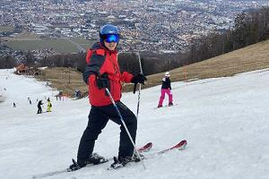
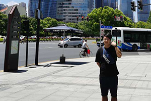
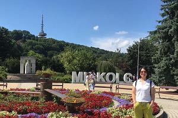
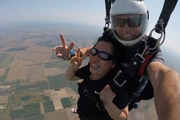
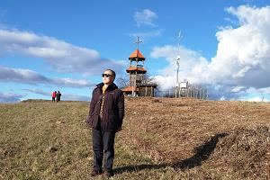
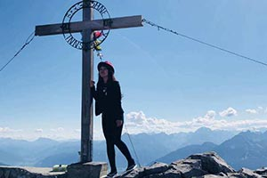
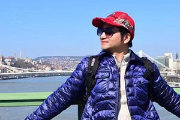

照片:

编号： 昵称： 孙导 (男) 生日： 1966年 籍贯： 北京 外语： 匈牙利语,英语 从业时间：2018年1月 爱好及特长：喜欢养狗、爱好旅游、跑步、游泳、滑雪。 自我介绍：性格热情开朗，待人友好，为人诚实谦虚，在欧洲生活了几十年，走遍了欧洲大部分国家，愿意把几十年来对欧洲的了解，展现给所有爱好旅游的朋友们！
编号： 昵称： 小陶 (男) 生日： 1984年7月 籍贯： 黑龙江 外语： 英语，匈牙利语，法语，日语 从业时间：2017年1月 注册时间：2018年1月 爱好及特长：体育运动项目（潜水、跳伞、滑雪、风浪板等）、摄影、航海、教育、美食、装修（电工、电焊、木工）、计算机（硬件维修、软件开发、网络维护）、电子产品、棋牌类、乐器、音乐、阅读、饮茶、古玩。 自我介绍：通过欧洲近20个国家、几百个城市、几千个景点、几十万公里的导游经历，让我对欧洲的旅游资源有了系统深入的学习和理解，希望用我的诚心和努力的服务，为您带来欢乐！

编号： 昵称： 小杰 (男) 生日： 1997年3月 籍贯： 福建 福州 外语： 英语，匈牙利语 从业时间：2018年6月 爱好及特长： 喜欢运动，爱打篮球。 自我介绍：虽然我比较年轻，但是我比较努力，也希望自己能做的更好！希望通过我的努力，能给您带来最最舒适的旅行！
照片：
编号： 昵称：齐若克Tank (男） 生日：1992年4月 籍贯：浙江 外语：匈牙利语，英语 从业时间：2014年 爱好和特长：玩抖音，刷微信，旅游。 自我介绍：本人从事导游有多年工作经验，带过公务团，司导团，大巴团。 主要路线有奥地利，匈牙利，捷克，斯洛伐克，德国，瑞士，克罗地亚，塞尔维亚，斯洛文尼亚，小巴尔干国家等20多个国家深入游。欧洲各国民族的风土人情，历史文化名城。美轮美奂的阿尔卑斯山脉，众多的世界文化遗产和自然遗产都留下深刻印象。人个最钟爱的是奥地利的圣沃尔夫冈湖小镇，哈尔施塔特湖镇，克罗地亚的十六湖，杜城下的亚得里亚海的明珠，以及扎达尔，斯普利特都是夏日里必不可少的拍照旅行圣地！ 本着热情服务，认真负责的态度，能和客户相处融洽 ！2016年为《我们的挑战》在保加利亚拍摄剧组工作。2019年为匈牙利万华集团公司领导服务，2019年匈牙利5G会议为华为公司组领导服务.

编号： 昵称： 小草 (女) 生日： 1976年11月 籍贯：浙江 外语： 匈牙利语 从业时间：2018年6月 爱好及特长：美食，旅行，运动，交友。 自我介绍：2015年开始探索南美洲，热爱旅游和运动，用我的真心为您服务，希望能和您做朋友！
编号： 昵称： 娇娇(女) 生日： 1993年 籍贯： 匈牙利 外语： 英语，匈牙利语 从业时间： 2018年
个人介绍：我喜欢脱离舒适的城市，探索陌生的环境和区域；我热爱世界各地的文化并结交新的朋友；我曾在许多国家旅行、生活和工作过，分享我丰富的经验是我最大的乐趣之一。 通过掌握的专业技能、历史文化以及对工作的热情，我能使每一个旅程都变得更加生动、有趣味。让我们一同来开展一段美妙的旅程吧！

编号： 昵称： 小吴 (女) 生日： 保密 籍贯： 北京 外语： 英语，匈牙利语 从业时间： 2018年1月
爱好及特长：爱吃、爱喝、爱玩、爱唱歌、爱运动、爱旅游、喜欢历史、爱探索冒险。 个人介绍：个人兴趣让我对欧洲的历史，风土人情，民俗文化产生了极其神秘的感觉。这种动力让我从一个小小的旅游爱好者变成了一个导游。凭着我在欧洲几十年的旅行经验和对欧洲几十个国家的探索和研究，可以给您一个与众不同的旅行经验。

编号： 昵称： 成果(男) 生日： 1959年 籍贯： 黑龙江 外语： 匈牙利语 从业时间： 2020年
爱好及特长：喜欢旅游、下象棋。 个人介绍：我是一名退休的中学数学教师，曾在国内任教40多年，现在欧洲定居，希望在我的陪伴下，您的旅程一切顺心！

昵称：张璟 生日：保密(爱笑的年纪) 外语：英语，匈牙利语 从业时间：2017年2月 爱好：旅行，瑜伽，咖啡，种花种草看博物馆 自我介绍：由涉足欧洲婚纱旅拍行业，开始对旅行产生兴趣，喜欢自己制作有趣的行程各处看风景，边看边学习欧洲历史。2016年受朋友介绍的一家人邀请作为私人导游游览欧洲，开始了导游生涯。17年开始德国奥地利捷克匈牙利四国音乐文化旅。18年开始大巴尔干踩点和导游活动，深入整个巴尔干，包含科索沃等小众地区，负责大团导游和高级定制；匈牙利境内接待过诸如中国福利会少年宫参加的28届巴托克国际合唱比赛；中国文化国际传播研究院主办的“看中国，外国青年影像计划”与布达佩斯城市学院交流活动。2019年作为英文导游接待巴基斯坦代表团参加世界电信展；协助大连理查德钢琴城与李斯特音乐学院的音乐学习交流活动；2020年疫情发生前的一月还负责意大利20天高端定制深入游。本人喜欢欧洲文化，热爱欧洲的山水和博物馆里每一个阶段的文化沉淀，希望有机会和热爱旅行的人士共赴山水间的美好。

昵称：潘导 生日：1970年9月 籍贯：广东 广州 语言：英语，粤语 从业时间：2015年9月 注册时间：2018年1月 爱好及特长：摄影、羽毛球、网球、葡萄酒鉴赏。 自我介绍：旅居欧洲7年，足迹遍布大半个欧洲，曾组织丝路扬帆2016中国-匈牙利雕塑艺术展，协办2018点亮布达佩斯-中国文化"一带一路"巡展。揽中欧之胜境，谱旅游之华章。
昵称： 笑笑 (女)
生日： 1988年8月 籍贯： 四川.成都 外语： 英语，匈牙利语，德语 从业时间： 2016年1月1日
爱好及特长：喜欢运动、热爱摄影。 个人介绍：我认为导游工作需要做到“准确、清楚、生动”三点，为了做到这些，要与时俱进，永远保持积极的求知欲。希望我的服务能给您的旅途增添一抹靓丽的色彩！